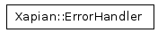
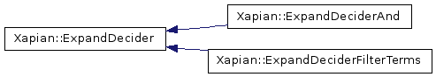
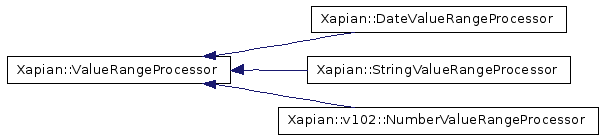
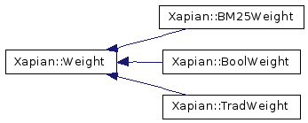

Main Page
Namespaces
Classes
Files
Related Pages
Alphabetical List
Class List
Class Hierarchy
Class Members
xapian-core Graphical Class Hierarchy
Go to the textual class hierarchy




Documentation for Xapian (version 1.0.2).
Generated on 5 Jul 2007 by
Doxygen 1.5.2
.